PORTABLE Event Security
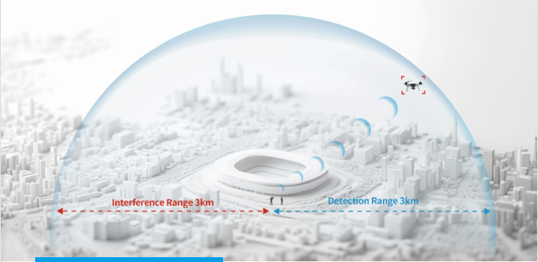
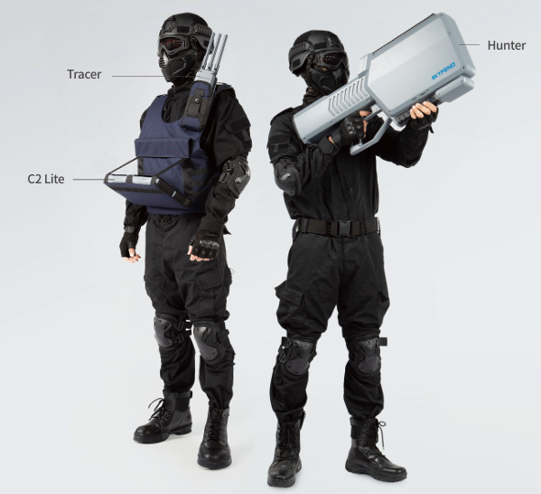
INTRODUCCION
Reúne los requsitos de conficdencialida necesarios para eventos espceiales, Skyfend ofrece una solicion portatile para posicionamiento y control de drones, esto previene de manera efectiva los drones invasores. Se recomienda que esta solución sea operada conjuntamente por un detector y un operador de interferencia. Los operadores de detección pueden utilizar dispositivos de detección por radiofrecuencia para localizar con precisión los drones y sus pilotos, solucionando así el problema de los drones "rebeldes" desde su origen. El operador de contramedidas utiliza un dispositivo integrado de reconocimiento y ataque para lograr un proceso de circuito cerrado de detección y ataque independientes..
ESPECIFICACIONES
Detección: Análisis de protocolo de 3 km + detección de espectro de 2,5 km (basado en el modo SRRC del DJI Mavic 3, potencia de señal de aproximadamente 20 dBm a 2,4 GHz y de aproximadamente 30 dBm a 5,8 GHz, sin interferencias fuertes en condiciones de avistamiento). Interferencia: 3 km (cobertura de banda completa personalizable. Los modelos con interferencias incluyen DJI, Autel, Parrot, FIMI.)
PORTABLE Border Defense
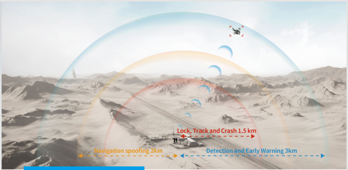
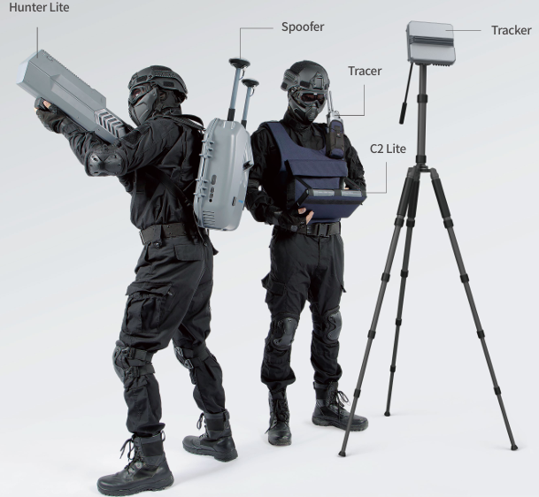
INTRODUCCION
La solución portátil de control fronterizo está diseñada específicamente para escenarios de C-UAS que exigen alta maniobrabilidad, con el objetivo de ayudar a los equipos de defensa fronteriza a interferir e interferir eficazmente contra amenazas en entornos complejos. Ante los desafíos de las amenazas difíciles de detectar, localizar e interferir, esta solución garantiza una respuesta rápida en momentos críticos mediante la colaboración entre detectores y operadores de inhibidores, proporcionando protección en tiempo real y la capacidad de interferir eficazmente más allá de la línea de visión, mejorando así el alcance y la flexibilidad de la protección. Detector: Se utilizan equipos de detección por radio que pueden proporcionar alertas tempranas y oportunas contra amenazas de drones. El posicionamiento preciso se logra mediante un radar giratorio, que puede identificar claramente la dirección de aproximación del objetivo, proporcionando así una guía eficaz a los operadores de inhibidores. Operadores de inhibidores: Con la ayuda de la tecnología de suplantación de navegación, pueden responder eficazmente a drones equipados con GNSS. Además, en combinación con la función integrable de SPS100 y SSH100, y guiados por radar, pueden lograr una interferencia precisa en el dron objetivo, provocando su desestabilización y caída.
ESPECIFICACIONES
Detección de radio: 3 km (basado en el modo SRRC del DJI Mavic 3, con una potencia de señal de aproximadamente 20 dBm a 2,4 GHz y de aproximadamente 30 dBm a 5,8 GHz, sin interferencias fuertes en condiciones de avistamiento). Radar: FPV de 7 pulgadas: 800 m; DJI Mavic 3: 1100 m; DJI FC30: 2500 m. Simulacro de navegación: 2 km (con el DJI Mavic 3 como modelo típico). Interferencia de radiofrecuencia: 1,5 km (modo SRRC basado en el DJI Mavic 3, modelo típico con una potencia de señal de aproximadamente 20 dBm a 2,4 GHz y de aproximadamente 30 dBm a 5,8 GHz, y una distancia entre el piloto del dron y el dispositivo inhibidor de 3 km)
FIXED Energy Facility Protection
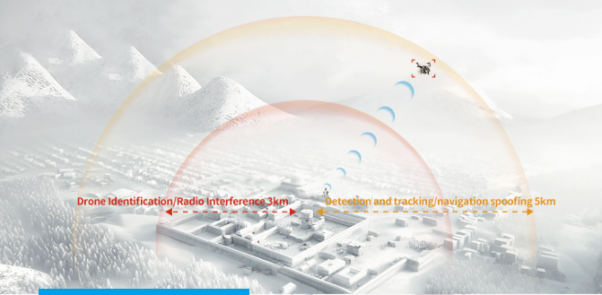
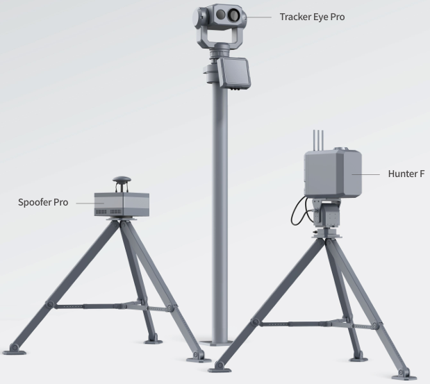
INTRODUCCION
Mediante la combinación de múltiples sensores, como radares, equipos de detección por radio y cámaras ópticas, la solución de protección de instalaciones energéticas de SkyFend permite la detección, el seguimiento y la identificación en tiempo real de drones de baja altitud en el área protegida, garantizando una detección precisa con una baja tasa de falsas alarmas o incluso sin ninguna. Gracias a la guía del equipo de detección, el equipo de interferencia puede ofrecer una interferencia e interferencia más precisas contra las intrusiones de drones sin afectar a los drones que operan en la central. En definitiva, permite la detección e interferencia oportunas contra las intrusiones de drones, garantizando al mismo tiempo el normal funcionamiento de las instalaciones energéticas.
ESPECIFICACIONES
Detección por radio: 5 km (basado en el modo SRRC del DJI Mavic 3, potencia de señal de aproximadamente 20 dBm a 2,4 GHz y de aproximadamente 30 dBm a 5,8 GHz, sin interferencias fuertes en condiciones de avistamiento). Detección visual y por radar: FPV de 7 pulgadas: 3,5 km; Minidrones y microdrones (DJI Mavic 3): 5 km. Drones pequeños y medianos (DJI M300): 7 km Análisis de protocolo: 3 km (basado en el modo SRRC del DJI Mavic 3, con una potencia de señal de aproximadamente 20 dBm a 2,4 GHz y de aproximadamente 30 dBm a 5,8 GHz, sin interferencias fuertes en condiciones de avistamiento) Interferencia de radiofrecuencia: 3 km (modo SRRC basado en el DJI Mavic 3, modelo típico con una potencia de señal de aproximadamente 20 dBm a 2,4 GHz y de aproximadamente 30 dBm a 5,8 GHz, y una distancia entre el piloto del dron y el dispositivo de interferencia de 6 km) Suplantación de navegación: 5 km.
VEHICLE-MOUNTED C-UAV SYSTEM
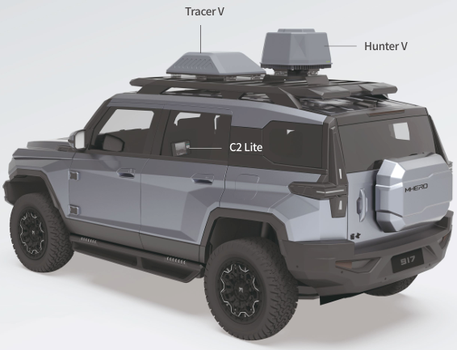
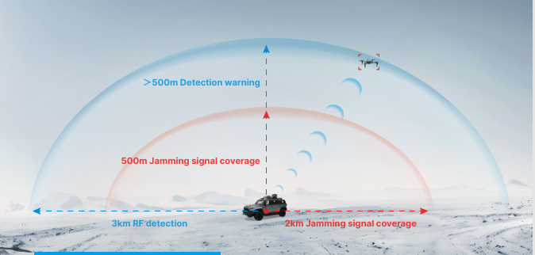
INTRODUCCION
El sistema C-UAV Skyfend, montado en vehículo, consta del detector de radio Tracer V y el inhibidor Hunter V, formando una protección semiesférica sin puntos ciegos. El sistema es capaz de detectar y localizar drones cooperativos y a sus pilotos, además de proporcionar detección y alerta temprana para drones no cooperativos. Gracias a sus eficientes capacidades de detección y contramedidas, el sistema puede contrarrestar automáticamente las bandas de frecuencia objetivo basándose en la guía de detección, lo que garantiza una defensa eficaz contra drones.
ESPECIFICACIONES
Protección eficiente: Alcance de detección >3 km, cobertura de señal de interferencia >2 km; detección inteligente y contramedidas precisas contra drones FPV. Defensa integral: Cobertura hemisférica de detección y contramedidas con protección horizontal de 360° y vertical de 90°. Configuración flexible: Compatible con bandas de frecuencia de detección y contramedidas definidas por software, con capacidad para ampliar a cuatro bandas adicionales.
SkyShield Nexus
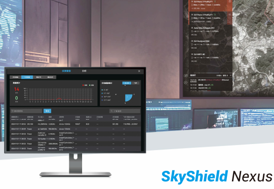
Skyshield Nexus es un centro integrado de comando y control aire-tierra impulsado por IA que combina detección y alerta temprana, toma de decisiones inteligente e interceptación coordinada. Impulsado por la fusión de datos multifuente basada en IA, admite conexiones a miles de dispositivos con tiempos de respuesta de segundo nivel. El sistema permite capacidades de defensa multicapa, incluyendo interferencias electrónicas, suplantación de identidad, interceptación láser y contramedidas contra drones. Ofrece trazabilidad de eventos y recopilación de evidencia conforme a las normativas, y es compatible tanto con Skyfend como con terceros.
CARACTERISTICAS
- Operaciones y mantenimiento de dispositivos inteligentes
- Conocimiento situacional panorámico
SkyShield Nexus
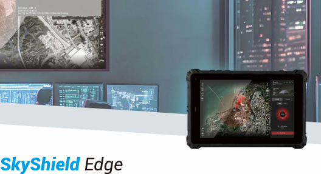
Skyshield Edge es un sistema de control de dispositivos antidrones multiplataforma de alta seguridad, diseñado para una coordinación fluida con los sistemas Skyfend. Ofrece conocimiento de la situación en tiempo real y análisis exhaustivo de datos, y admite la conectividad de dispositivos través de puertos LAN y serie. Dispositivos antidrones. Con acceso web y colaboración multiterminal, admite la implementación a través de servidores privados o la nube. Diseñado para la defensa del espacio aéreo a gran escala, Skyshield Nexus ofrece una solución unificada e inteligente para la gestión multidominio.
CARACTERISTICAS
- Despacho Coordinado Integrado Conciencia Situacional Integral.
- Decisiones y respuestas inteligentes
- Gestión integral de circuito cerrado
SkyfendHunter Lite
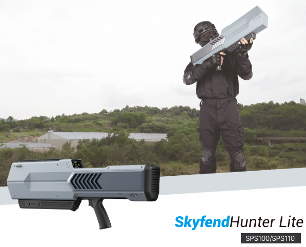
Hunter Lite es un inhibidor portátil contra vehículos todoterreno. Con funciones clave para el control de vuelo de drones y la interferencia de la banda de frecuencia de navegación, puede repeler drones o forzar su colisión para eliminar la amenaza de los vehículos todoterreno no autorizados.
SkyfendHunter Lite
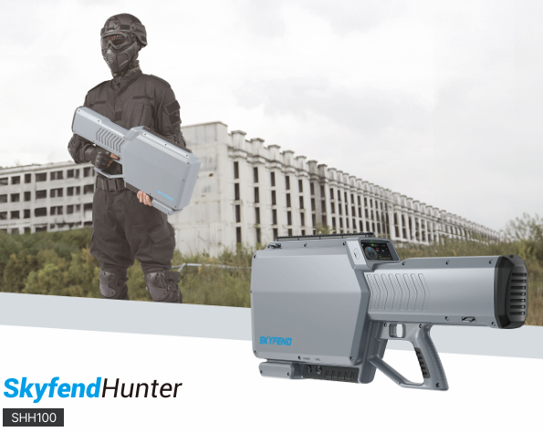
Hunter es un inhibidor de drones portátil versátil que detecta, identifica, localiza y mitiga eficazmente las amenazas de drones. Hunter ofrece una eficacia excepcional contra la mayoría de los tipos y modelos de drones. Puede interrumpir simultáneamente las señales de control de vuelo y navegación de varios drones. Con su diseño compacto y su interfaz intuitiva, Hunter es la solución definitiva contra drones en diversos escenarios, como la seguridad de eventos, la protección VIP y la seguridad de instalaciones energéticas.
SkyfendHunter F
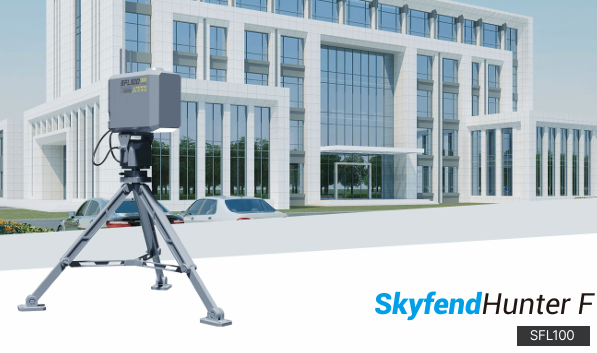
Hunter F es un dispositivo fijo de contramedidas para drones que integra funciones de reconocimiento y ataque, capaz de detectar y recibir señales de comunicación e identificar modelos de drones. Al monitorear la información transmitida por los drones, Hunter F puede obtener información clave en tiempo real, como latitud y longitud, altitud, velocidad, ángulo de guiñada, modelo, número de serie (SN) y posición del piloto, y desarrollar estrategias precisas de ataque por radio para diferentes modelos de drones. Los usuarios pueden consultar rápidamente la información de detección del dispositivo, configurar parámetros y datos históricos de detección a través del sistema C2. El dispositivo también admite funciones de lista negra y lista blanca, lo que proporciona a los usuarios soluciones flexibles de gestión de seguridad. Gracias a su cuidadoso diseño, Hunter F puede funcionar de forma estable en diversos entornos exteriores durante un largo periodo de tiempo para garantizar una protección continua y fiable.
SkyfendHunter V
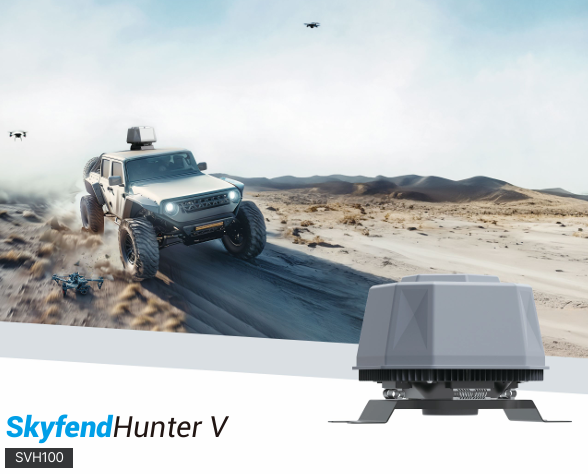
El dispositivo de contramedidas FPV integrado interrumpe la recepción de señales de control remoto del dron mediante la generación de señales de interferencia de alta potencia, lo que crea un escudo protector contra las amenazas FPV. Este dispositivo utiliza tecnología de radio definida por software para adaptarse a diferentes protocolos de comunicación inalámbrica y bandas de frecuencia mediante una configuración de software flexible. En comparación con las contramedidas analógicas tradicionales, mejora significativamente la eficacia contra interferencias y la capacidad de contramedidas sostenibles.
SkyfendTracer
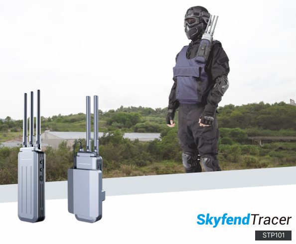
Tracer es un dispositivo diseñado para monitorear y gestionar la actividad de drones aéreos. Decodifica las señales de transmisión de los drones para extraer información detallada, como la marca, el modelo, el número de serie, la ubicación y la posición del operador. Además, emplea tecnología avanzada de detección de radiofrecuencia (RF) para detectar drones, realizar radiogoniometría e interceptar transmisiones de video en vivo de diversos tipos de drones. Sus flexibles opciones de personalización permiten a los usuarios evaluar rápidamente el entorno de RF local, responder con prontitud a las amenazas emergentes y proteger eficazmente la infraestructura, los sitios y el personal críticos.
SkyfendTracer G
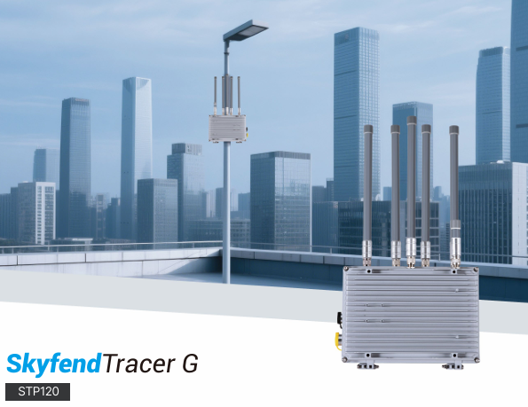
Tracer G es una solución especializada para la supervisión de drones a baja altitud en entornos urbanos. Combina dos tecnologías avanzadas de detección de RF: decodificación de protocolos y reconocimiento de firmas de RF. Mediante la decodificación de protocolos, Tracer G puede identificar y rastrear drones comerciales comunes, como los de DJI, en tiempo real mediante la interpretación de datos de telemetría de transmisión. Esto permite al sistema extraer información completa de vuelo e identificación, incluyendo la marca, el modelo, el número de serie (SN), la velocidad de vuelo, la posición, la altitud y las coordenadas del operador del dron. Para drones no cooperativos que no emiten señales de transmisión estándar, la tecnología de reconocimiento de firmas de RF detecta y emite alertas en tiempo real basadas en sus firmas electromagnéticas únicas. Este enfoque de doble capa garantiza un sólido conocimiento de la situación y optimiza el espacio aéreo.
SkyfendTracer Air
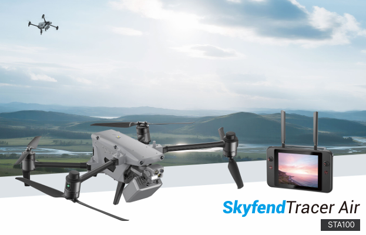
La solución de localización de pilotos de drones busca abordar la detección de operadores de drones en escenarios sin protocolos de transmisión (como Drone ID e Remote ID). Esta solución utiliza un equipo de radiogoniometría de alta precisión, montado en el dron, para realizar la radiogoniometría horizontal y vertical de las fuentes de señal del objetivo, incluyendo controles remotos de drones y dispositivos de interferencia de radio. Identifica la posible zona donde podría estar el objetivo y la muestra en un mapa.Mediante la búsqueda visual del área objetivo, combinada con la asistencia de reconocimiento de IA, la solución descubre y se fija eficazmente en el objetivo. Además, el dron está equipado con capacidades antiinterferencias, lo que garantiza un funcionamiento estable en entornos de radio complejos.
SkyfendTracer & Max 4T
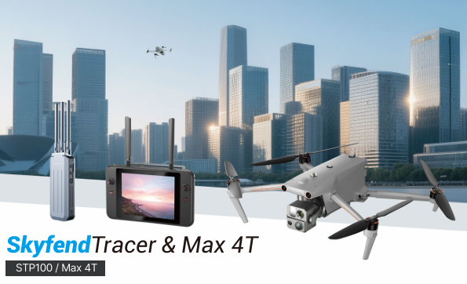
El sistema Tracer P analiza de manera eficiente las señales del protocolo de transmisión de los drones, lo que le permite capturar información clave de forma exhaustiva y localizar con precisión a los operadores de vuelos ilegales.Para mejorar la eficiencia en la detención de pilotos no autorizados, el Tracer P puede mostrar los resultados de la detección directamente en la interfaz del control remoto del dron, guiando a los usuarios para navegar rápidamente hacia ubicaciones específicas para su captura y seguimiento. Esto proporciona a las fuerzas del orden una solución fácil de usar, precisa y eficaz para documentar a los operadores no autorizados.
SkyfendTracer V
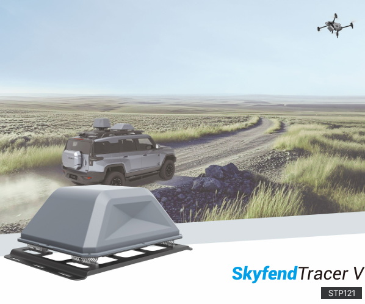
El sistema de detección vehicular Tracer V ofrece detección multidron y alerta temprana en un área de cobertura hemisférica de 3 km de radio y 500 metros de altitud.Tracer V recibe, analiza y procesa eficazmente señales de radiofrecuencia (RF) de una amplia gama de modelos de drones. Mediante el análisis de las transmisiones de enlace de datos de los drones, Tracer V puede detectar rápidamente la presencia de UAV y clasificar sus tipos, garantizando al mismo tiempo la ausencia de interferencias con los dispositivos de comunicación inalámbrica dentro de las zonas protegidas.Al decodificar las señales del protocolo de transmisión de UAV, Tracer V puede recuperar información detallada de los drones comerciales convencionales, como la marca, el modelo, el número de serie (SN), la ubicación, la altitud y la velocidad de vuelo, a la vez que identifica la ubicación del piloto remoto, lo que proporciona un sólido apoyo a la regulación de UAS.
SkyfendLaser
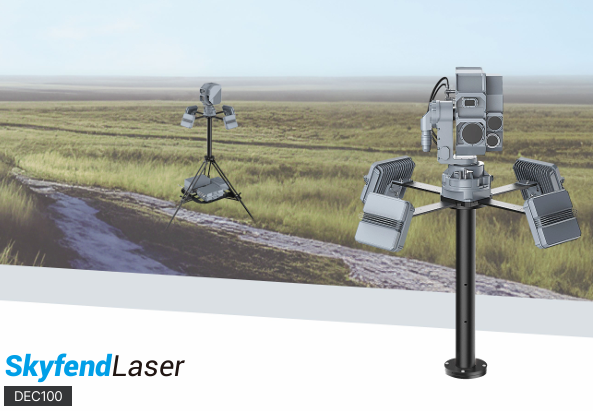
El Sistema de Contramedidas Láser es un módulo de neutralización de UAV de alta precisión diseñado para neutralizar drones pequeños de baja altitud mediante energía direccional. Diseñado para un despliegue rápido y su integración en sistemas de defensa por capas, proporciona capacidades de aniquilación efectiva contra UAV no autorizados. Equipado con un mecanismo de orientación guiado por radar, el sistema detecta, rastrea y clasifica amenazas aéreas en tiempo real. Una vez confirmado el objetivo, la unidad láser ejecuta un bloqueo rápido y un ataque de precisión, minimizando el riesgo colateral.
SkyfendSpoofer
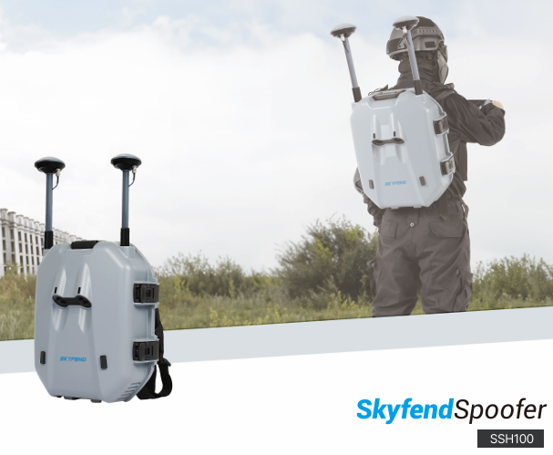
Spoofer es un instrumento de suplantación de identidad del Sistema Global de Navegación por Satélite (GNSS) diseñado específicamente para vehículos aéreos no tripulados (SUAV). Este equipo puede emitir señales públicas de navegación por satélite. Tiene la capacidad de implementar rápidamente diversas funciones, como la denegación de área, la guía dirigida y la defensa activa, abordando así el problema de las restricciones de vuelo para vehículos aéreos no tripulados comerciales en espacios aéreos sensibles. Además, al integrarse con sistemas de radar, dispositivos de detección de espectro e inhibidores de señal, puede facilitar la suplantación de identidad de alta precisión y evitar el impacto de drones.
SkyfendSpoofer Pro
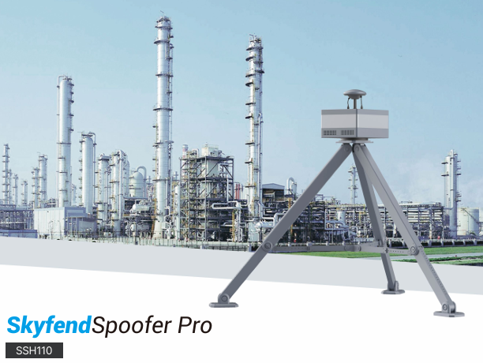
El Spoofer Pro es un dispositivo de suplantación de navegación para drones fijos con potentes capacidades de monitoreo, alta confiabilidad y estabilidad, mayor alcance efectivo y mayor nivel de protección, ideal para despliegues a largo plazo en ubicaciones fijas. Este dispositivo logra defensa activa, inducción direccional y denegación de área mediante la emisión de señales de simulación de navegación satelital civil, solucionando eficazmente los problemas de control de vuelo de drones comerciales pequeños de baja velocidad en áreas sensibles. Integrado con radar, detección de espectro y armas antidrones, puede realizar potentes funciones como suplantación direccional y colisión de drones.
SkyfendTracker
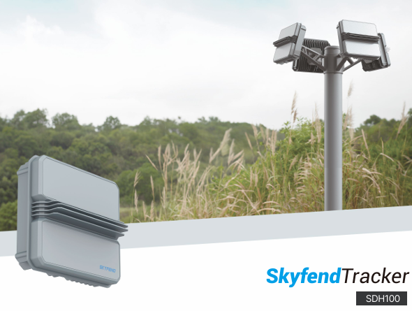
Tracker es un radar de matriz en fase de onda continua modulada en frecuencia lineal (LFMCW) en banda K con bajo SWaP, que ofrece detección de objetivos BLOS 4D en cualquier condición climática. Ofrece un seguimiento de alta frecuencia de actualización y alta fidelidad para una amplia gama de objetivos aéreos, incluyendo UAV convencionales, silenciosos, de fibra óptica y autónomos, así como objetivos terrestres como personal y vehículos. Diseñado para el seguimiento óptico y el guiado de contramedidas, se integra a la perfección con estaciones fijas, plataformas móviles y plataformas UAV, ofreciendo una solución de seguridad aire-tierra rentable.
SkyfendTracker Pro
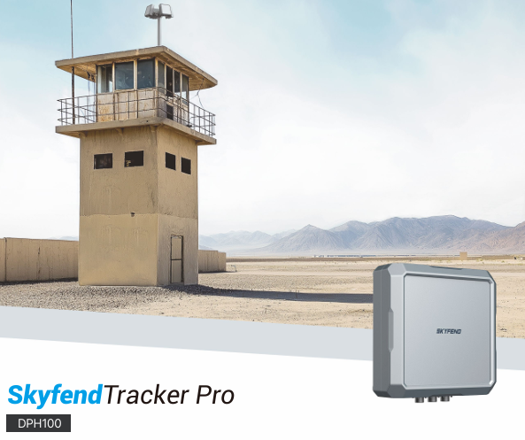
Tracker Pro es un radar de matriz en fase de pulso Doppler de banda X para vigilancia aérea y terrestre 4D de áreas extensas en cualquier condición climática. Admite modos de escaneo personalizables, incluyendo escaneo mecánico horizontal de 360°, dirección electrónica del haz de 90° y escaneo sectorial vertical. Con alta precisión y respuesta rápida, detecta con fiabilidad todo tipo de drones (convencionales, silenciosos, de fibra óptica, UAV de vuelo autónomo, etc.) y objetivos terrestres (personas, vehículos). Diseñado para seguimiento óptico y guiado de contramedidas, se integra a la perfección con plataformas fijas o montadas en vehículos, garantizando una cobertura de seguridad eficiente y precisa.
SkyfendTracker Eye
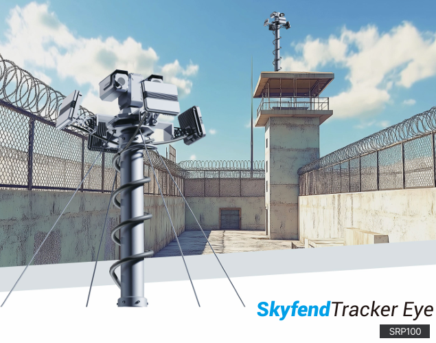
El SRP100 es un sistema antidrones de baja altitud que integra radar y módulo EO/IR, ofreciendo una capacidad integral de detección, guiado, identificación y seguimiento. El radar realiza la detección omnidireccional de objetivos y guía automáticamente el sistema EO/IR para el reconocimiento de objetivos y el seguimiento continuo, proporcionando una guía precisa con visualización completa del proceso. Diseñado para la protección a baja altitud en áreas críticas como aeropuertos, prisiones e instalaciones energéticas, ofrece conocimiento hemisférico de la situación en cualquier condición climática.
SkyfendTracker Eye Pro
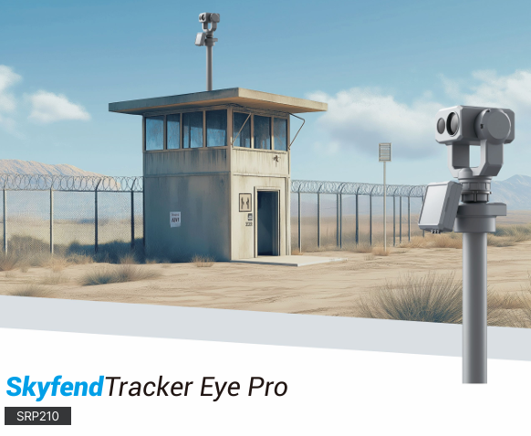
Tracker Eye Pro es un sistema de detección electroóptica con radar activo de amplio alcance que integra el radar de matriz en fase Tracker Pro y la tecnología de detección fotoeléctrica de enfoque largo. Garantiza una detección de drones en tiempo real, de alta precisión y en cualquier condición climática, en escenarios de protección de áreas extensas donde la detección por radio es ineficaz. Además, proporciona información de posición de alta precisión, clasificación de objetivos y vídeos de confirmación de amenazas.
SkyfendSpotter
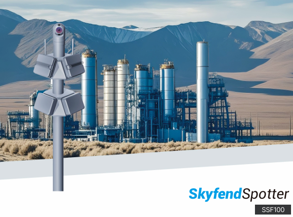
Spotter es un sistema de detección integrado diseñado para proporcionar vigilancia con drones 24/7 en cualquier condición climática para aeropuertos, eventos públicos a gran escala e infraestructuras críticas. Combina tecnologías de radar, detección electroóptica y detección por radiofrecuencia para brindar conocimiento situacional en tiempo real de la posición de los drones y los datos de vuelo, lo que facilita la rápida toma de decisiones operativas.El sistema emplea una arquitectura de procesamiento de IA distribuida que optimiza la eficiencia de los recursos mediante el procesamiento paralelo y el equilibrio de carga. Al integrar profundamente la inteligencia artificial avanzada, Spotter ofrece una solución inteligente, de alto rendimiento y escalable para la monitorización de drones y la mitigación de amenazas, que satisface integralmente los requisitos de seguridad de ntornos operativos complejos y dinámicos
SkyfendSentry
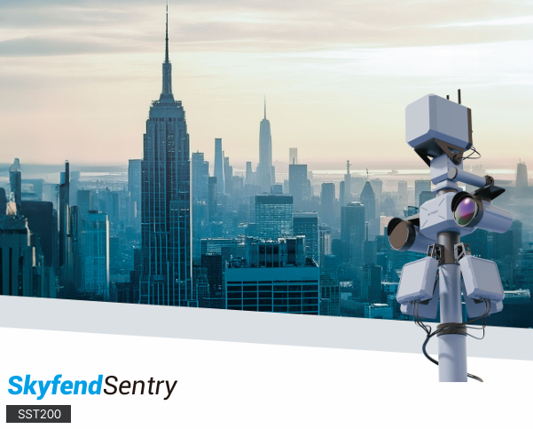
Sentry es un sistema fijo modular anti-UAS que integra a la perfección sensores de detección por radiofrecuencia, radar, visuales y de imagen térmica. Combinado con computación de borde y un motor avanzado de análisis de IA, forma un sistema de circuito cerrado de detección y contramedidas altamente integrado. El sistema automatiza todo el proceso, desde la detección, identificación y seguimiento de objetivos hasta la alerta temprana, la contramedida y la evaluación de efectos, mejorando considerablemente la eficiencia de la respuesta. Al aprovechar la fusión de datos de múltiples fuentes y la tecnología de reconocimiento mejorada por IA, Sentry garantiza una focalización precisa, a la vez que reduce significativamente las falsas alarmas y las detecciones fallidas. Es ideal para entornos complejos con altas exigencias de seguridad aéreas.